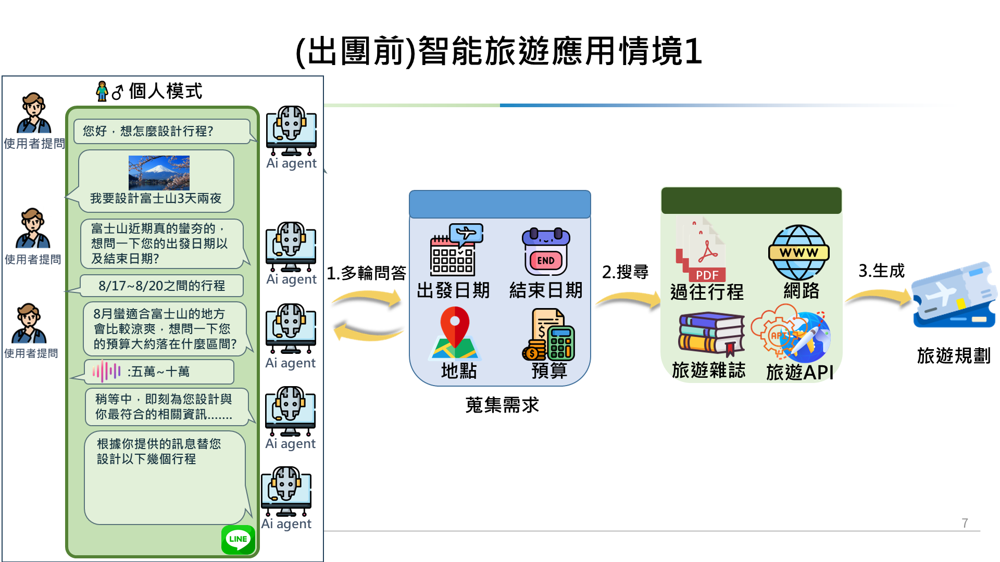
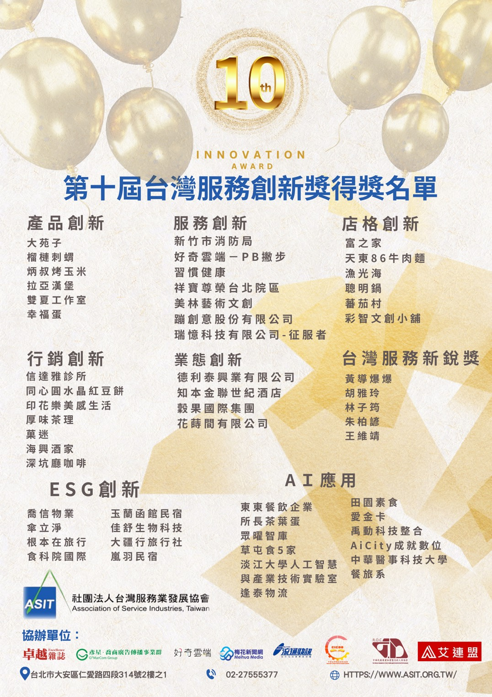
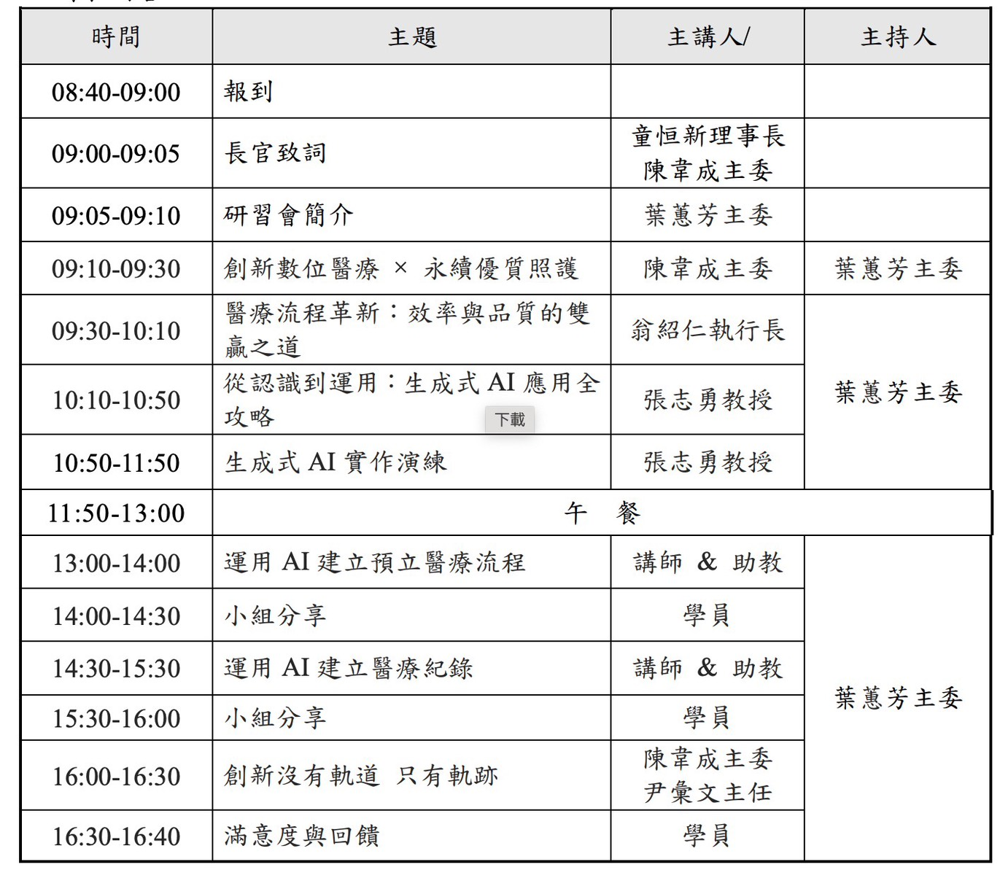

個人摘要
我畢業於淡江大學資訊工程學系，並完成資訊工程碩士訓練。研究方向是開放域目標導向主動對話、對話規劃與回應生成，研究訓練讓我熟悉資料處理、模型設計、訓練流程、評估指標與錯誤分析。
實作面則聚焦把 AI 做成可用系統：旅遊 AI Agent、ESGPB 虛擬人商家推薦、教育安全、語音學習、智慧照護、鐵道巡檢數位轉型規劃，以及醫療與半導體場域的 AI 教學工作坊。
技術堆疊與實作能力
LLM / RAG Systems｜大語言模型應用
Dialogue Research｜對話系統研究
Backend / Deployment｜後端與部署
Multimodal Vision / Audio｜多模態視覺與語音
Research Practice｜研究與評估
成果亮點
產學合作與場域需求
參與 精英國際教育、好奇兄弟雲端、世曦工程等合作或文件規劃，題目涵蓋教育安全、商家推薦、智慧照護與鐵道巡檢。
LLM / RAG 系統整合
使用向量資料庫、Embedding、短期記憶、長期資料庫與 RESTful API 串接，讓回答能對應知識庫與即時資料。
多模態與語音互動
處理語音辨識、文字生成、影像辨識、姿態估計與感測資料，應用在旅遊問答、英語學習、霸凌偵測與虛擬人互動。
教學與工作坊支援
協助半導體 AI 課程與醫療 AI 工作坊，將生成式 AI 轉成非資訊背景也能操作的流程。
學歷與研究方向
淡江大學｜資訊工程學系 學士
完成資訊工程學系學士學位，建立程式設計、資料結構、資料庫、網路與 AI 基礎能力。
淡江大學｜資訊工程學系 碩士
完成碩士訓練，研究目標導向主動對話中的規劃遵循回應生成，聚焦模型如何根據對話歷史、候選知識與目標逐步推進對話。
合作與公開資料
好奇兄弟雲端｜ESGPB 虛擬人與商家推薦
ESGPB 網站可見商家、折扣、ESG 活動與 PB 撇步商家推薦助理入口；專案補充為虛擬人、RAG 與語音互動整合。
台灣世曦工程｜委託應用AI建構鐵道專業服務及巡檢數位轉型建置之規劃、基本設計、細部設計審查、監督審驗(含鐵道領域專業顧問)技術服務
相關資料包含標案頁、決標資訊與淡江時報交流新聞，主題為 AI 建構、鐵道專業服務與巡檢數位轉型。
精英國際教育集團｜112年度「產學合作計畫-基於深度學習之霸凌偵測及專注力辨識系統」【科技部案】
國科會支持之產學合作研究，結合幼兒園既有攝影設備與多模態 AI，建立疑似霸凌事件的即時偵測與通知流程。
113年度「產學合作計畫—AI智慧英語學習系統之開發及融入精準學習之成效」【科技部案】
語音示範、發音評分與對話評分相關計畫，對應 AI 智慧英語學習平台開發。
智慧居家養老~基於機器學習與深度學習的規律性分析、行為辨識及異常狀態辨識研究與實作
國科會研究計畫，聚焦居家照護場域的規律性分析、行為辨識與異常狀態辨識。
高齡者智慧健康管理：基於 AI 姿勢分析與知識圖譜問答【科技部案】
結合 AI 姿勢分析、知識圖譜與 RAG 健康問答，支援高齡者智慧健康管理。
陽明交通大學｜半導體 AI 與 ChatGPT 應用班
課程網站列出半導體概念、Python、資料處理、機器學習、深度學習、NLP、ChatGPT 與專題實作。
專案經歷
ESGPB 虛擬人商家推薦助理
- 以 Docker 建立 Qdrant、Redis、PostgreSQL 等服務：向量檢索、短期對話記憶與長期偏好資料分層。
- Qdrant 儲存商家語意向量，搭配 OpenAI Embedding 支援餐廳與優惠的語意搜尋。
- 串接合作方商家資料庫 API，讓推薦結果能對應即時商家資料與優惠內容。
- 語音互動規劃使用 GPT Realtime，並保留使用者文字輸入與拍照互動入口。
GPT Realtime 即時語音Qdrant 向量資料庫Redis 短期記憶PostgreSQL 長期資料庫Docker 部署Sora 虛擬形象
112年度「產學合作計畫-基於深度學習之霸凌偵測及專注力辨識系統」【科技部案】
- 由張志勇教授主持，AIIT 與精英國際教育集團合作，研究成果已陸續發表於 IEEE Transactions 等國際期刊。
- 結合幼兒園既有攝影設備與 AI 技術，透過影像辨識、語音訊號處理、語調分析等多模態資料，建立疑似霸凌與專注力辨識機制。
- 整合 STT 語音轉文字、BERT 文本分類、MFCC 語音特徵、CNN/LSTM 與 3DCNN/LSTM 等模型方向，分析攻擊性語句、威脅性語音與異常動作。
- 以多模型融合判斷疑似霸凌情境，一旦偵測到風險，可通知班級教師或家長介入。
- 使用多模態視覺化與特徵分析，輔助事件判讀與系統改善。
BERT 文本分類STT 語音轉文字MFCC 語音特徵CNN / LSTM3DCNN 動作辨識多模態融合
多模態意圖驅動旅遊 AI Agent 系統
- 將旅遊手冊、景點、行程、常見問題與詐騙警示轉成互動式問答，支援導遊即時資訊推送、旅客問答與旅後資料沉澱。
- 以知識圖譜管理地點、景點與活動關係，並把旅遊資料轉為 Embedding 存入 Qdrant 向量資料庫。
- Redis 保存即時互動短期記憶，PostgreSQL 管理旅遊紀錄與行程資訊。
- Whisper 搭配 LoRA 微調改善方言與旅遊口語辨識；Blip2 支援圖片語意理解。
- 結合 DuckDuckGo API 補充即時資料，由 ChatGPT 生成行程建議、PDF 或 PPT。
AI Agent 智能代理Qdrant 向量資料庫Redis 短期記憶Neo4j 知識圖譜Whisper 語音辨識Blip2 圖像理解
2024 AI 應用鬥智賽｜以 Llama 解決 LLM 幻覺、成本與風格需求
- 針對企業導入 LLM 的三個痛點：幻覺內容、OpenAI API 成本壓力、特定產業語氣與風格不適配，提出以 Llama 為例的解法設計。
- 設計三階段知識檢索流程，結合 BM25、Cosine 語意相似度、實體 / 語意分析與交叉比對，降低 LLM 幻覺風險。
- 以 RAG 檢索流程與知識庫查詢降低模型憑空生成風險，讓回答能回到可驗證資料。
- 透過本地或替代模型架構降低頻繁呼叫大型 API 的成本壓力。
- 針對特定產業人員語氣與品牌風格進行調整，補足通用模型難以貼合場景的問題。
Llama 開源模型RAG 知識庫檢索BM25 關鍵字檢索Cosine Similarity 語意相似度Hallucination 幻覺抑制
委託應用AI建構鐵道專業服務及巡檢數位轉型建置之規劃、基本設計、細部設計審查、監督審驗(含鐵道領域專業顧問)技術服務
- 協助世曦工程撰寫該標案相關規劃、基本設計、細部設計審查、監督審驗與鐵道專業顧問技術服務內容。
- 將鐵道巡檢、專業知識、影像辨識、文件查詢與數位轉型流程轉成可描述的 AI 技術服務架構。
- 整理規劃、設計審查與監督審驗可對應的資料流、模型流與顧問支援範圍。
- 公開資料包含標案頁、世曦公司頁面、淡江時報交流新聞與合照。
Railway AI 鐵道應用RAG 知識庫Computer Vision 影像辨識Digital Inspection 數位巡檢Technical Proposal 技術服務文件
榮總合作工作坊｜AI 輔助預立醫療流程與醫療紀錄
- 依現場流程表，工作坊包含生成式 AI 應用全攻略、實作演練、運用 AI 建立預立醫療流程，以及運用 AI 建立醫療紀錄。
- 協助授課與實作，將 ChatGPT / 生成式 AI 轉成醫療流程撰寫、文字整理與紀錄草稿產出的操作流程。
- 面向專科護理師，重點不是模型炫技，而是把 AI 用在可操作的醫療流程撰寫與紀錄整理。
- 透過實作與小組分享，協助學員把 AI 輸出轉成符合工作情境的文件草稿。
Healthcare 醫療場域ChatGPT 生成式 AIPrompt 提示設計Workflow 流程設計Workshop 工作坊
陽明交通大學｜半導體 AI 與 ChatGPT 應用班
- 協助半導體產業情境下的 AI 與 ChatGPT 應用規劃，課程涵蓋半導體概念、Python、資料處理、ML/DL、NLP、ChatGPT 與專題實作。
- 整理生成式 AI、Prompt Engineering 提示工程、資料分析、文件整理與流程自動化案例。
- 協助把 ChatGPT 應用轉化為具體操作任務，支援非資訊背景學員理解與實作。
ChatGPT 生成式 AIPrompt Engineering 提示工程Semiconductor 半導體應用Teaching 教學支援
113年度「產學合作計畫—AI智慧英語學習系統之開發及融入精準學習之成效」【科技部案】
- 參與 AI 智慧英語學習平台開發，改善口說訓練不足、評量主觀性高與缺乏即時回饋問題。
- 使用 Azure TTS 建立標準語音示範，讓學生可聆聽與模仿。
- 使用 Azure Speech Service 分析錄音，提供流暢度、準確度、完整度與發音精確度等分數。
- 使用 Azure OpenAI 建立對話評分模組，提供語意理解、語法建議與內容評價。
Azure TTS 語音合成Azure Speech 語音評分Azure OpenAI 對話評分NLP 自然語言處理
智慧居家養老~基於機器學習與深度學習的規律性分析、行為辨識及異常狀態辨識研究與實作
- 參與智慧居家養老系統規劃，將感測資料、行為序列與異常狀態辨識整合到 AI 輔助照護流程。
- 以 LSTM、Transformer、Autoencoder、Isolation Forest 分析行為規律性與異常。
- 以機器學習與深度學習方法分析居家場域中的行為辨識與異常狀態。
- 將規律性分析結果轉成可用於照護提醒與風險判斷的資料流程。
IoT 感測資料Transformer 序列建模Behavior Recognition 行為辨識Anomaly Detection 異常偵測
高齡者智慧健康管理：基於 AI 姿勢分析與知識圖譜問答【科技部案】
- 參與高齡者智慧健康管理系統規劃，將姿勢分析、健康知識庫、知識圖譜與 RAG 問答整合到 AI 輔助健康管理流程。
- 透過 AI 姿勢分析偵測運動姿勢錯誤，降低高齡者受傷風險。
- 整合健康、營養、運動與醫療知識，結合知識圖譜與 RAG 技術提供個人化問答。
- 將姿勢分析結果與問答流程連接，支援高齡者健康管理與照護回饋。
Pose Estimation 姿態估計Knowledge Graph 知識圖譜RAG 健康知識問答Smart Healthcare 智慧健康管理
全域意境感知智慧會議秘書系統
- 整合會前資料包、會中逐字稿摘要與會後任務追蹤，讓會議內容能轉成可追蹤任務。
- Whisper 即時語音辨識，ECAPA-TDNN / Spectral Clustering 區分發言者。
- Sentence-BERT、HDBSCAN、TextRank 與 LLM 提示工程產出決策、任務與討論摘要。
- n8n × Webhook 串接 LINE、Email、Google Calendar 進行推播、提醒與進度追蹤。
- 多代理協作負責資料分析、摘要生成、任務追蹤與系統回饋。
Whisper 語音辨識Speaker Diarization 說話者分離n8n 流程自動化Webhook 系統串接Multi-Agent 多代理協作
代表案例


具意圖探測的多模態旅遊問答服務系統
重點
- 資料庫與檢索流程整理
- 語音 / 圖片輸入流程規劃
- 簡報與展示素材整理
技術
- Neo4j / Qdrant / Redis
- PostgreSQL / Whisper / Blip2
- LLM / Embedding / 外部 API
成果
- 2025 InnoServe 第三名
- PPT 可直接預覽
- 完整獎狀與官網連結


榮總 AI 輔助預立醫療流程與醫療紀錄
實作內容
- 協助授課與實作
- 提示設計與流程整理
- 把輸出轉成文件草稿
場域
- 專科護理師
- 預立醫療流程
- 醫療紀錄撰寫
證據
- 授課照片
- 工作坊流程表
- 網站活動紀錄

全域意境感知智慧會議秘書系統
流程
- 會前資料包
- 會中逐字稿與摘要
- 會後任務追蹤
技術
- Whisper / 說話者分離
- Sentence-BERT / TextRank
- LLM / n8n / Webhook
可看
- 展示影片
- Google Drive 原始影片
- 服務創新獎公開頁

多模態意圖驅動旅遊 AI Agent 簡報預覽

會議諸葛展示影片
活動與作品紀錄

榮總 AI 工作坊授課
榮總合作工作坊現場，協助專科護理師使用生成式 AI 進行預立醫療流程與醫療紀錄撰寫練習。
工作坊流程表
當天議程包含生成式 AI 應用、實作演練、預立醫療流程與醫療紀錄建立。

競賽與獲獎
2025 InnoServe｜商業發展治理創新組第三名
作品：具意圖探測的多模態旅遊問答服務系統。系統結合 AI Agent、RAG 知識庫、Qdrant 向量資料庫、Redis、PostgreSQL、Whisper 語音辨識與多模態輸入。
第三名Travel AI Agent 旅遊智能代理RAG 知識庫
自傳
我畢業於淡江大學資訊工程學系，並完成資訊工程碩士訓練，主要做大型語言模型、RAG、AI Agent 與 NLP 對話系統。碩士論文研究開放域目標導向主動對話，重點是讓模型能根據對話歷史、使用者條件、候選知識與最終目標，逐步推進對話。
研究上，我主要處理對話規劃、回應生成、資料處理、模型訓練與評估分析。實作上，我熟悉把模型輸出、RAG 知識庫、向量資料庫、後端 API 與使用者流程串成一個可操作的 AI 應用。
專案上，我接觸過旅遊問答、ESGPB 商家推薦、國科會 / 科技部計畫、鐵道巡檢文件規劃、半導體 AI 課程與醫療 AI 工作坊。這些經驗讓我比較能從現場需求出發，判斷要用檢索、資料庫、語音互動、影像模型或後端整合中的哪一段來解決問題。
我希望找 AI 應用工程師、LLM/RAG 工程師、NLP 工程師或機器學習工程師相關工作。比起只展示工具名稱，我更想投入能把模型、資料與流程整合起來的系統開發。